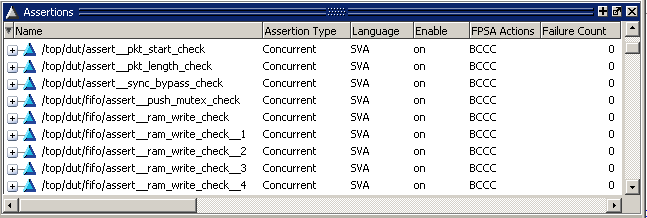
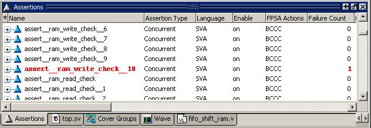

The Assertions
window displays simulation data about assertions.
Procedure
- To open the
Assertions window, select from the menus.
- Figure 1 shows SystemVerilog assertions in the
Assertions window. SV assertions are indicated by a light blue triangle.
PSL assertions (not shown) are indicated by a purple triangle.
Figure 1. SystemVerilog Assertions
in the Assertions Window
- The Assertions window lists
all embedded and external assert directives that were successfully
compiled and simulated during the current session. The plus sign
(’+’) to the left of the Name field lets you expand the assertion
hierarchy to show its elements (properties, sequences, clocks, and
HDL signals).
- The Assertions window includes
several columns for displaying information about assertions. Refer
to “Assertions Window” in the GUI Reference Manual for a description of
each field.
- When assertions fire with
failure messages, the Assertions window displays the name and failure
count in red, both during simulation and in post-simulation mode
(Figure 2).
Figure 2. Assertion Failures
Appear in Red
- You can use the assertion count command to return the sum of the assertion failure
counts for a specified set of assertion directive instances. This
command returns a “No matches” warning if the given path does not
contain any assertions.